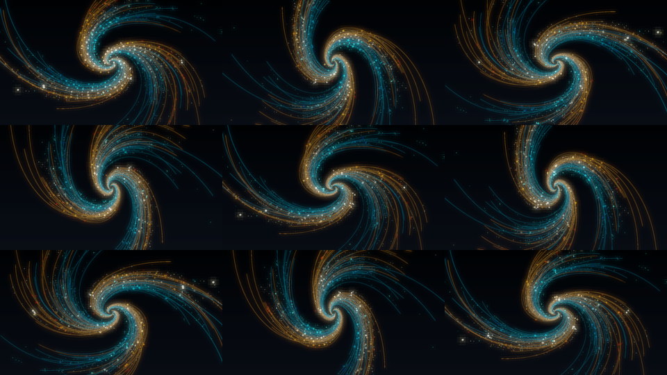
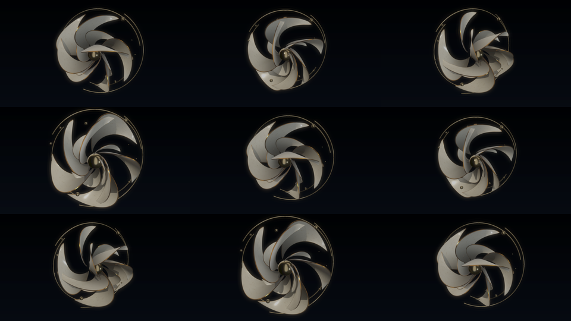
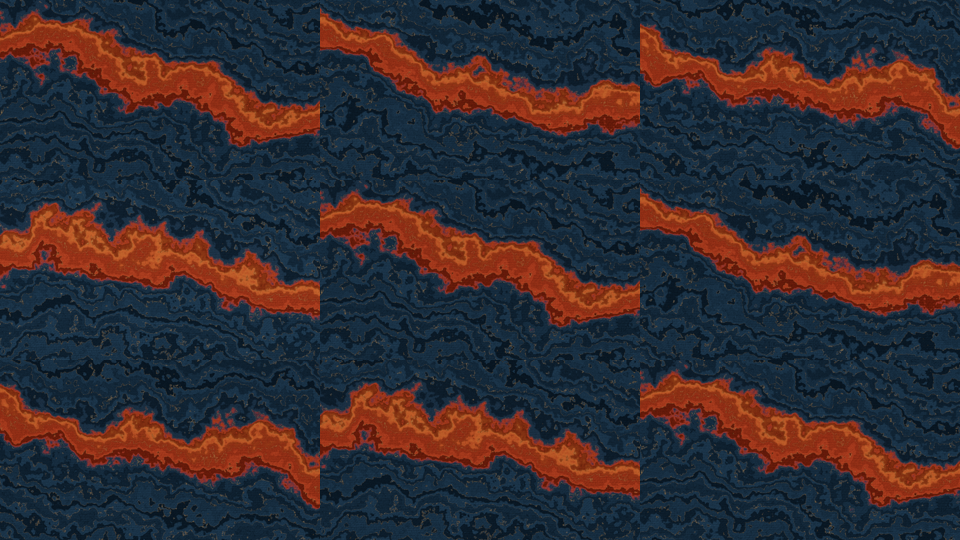
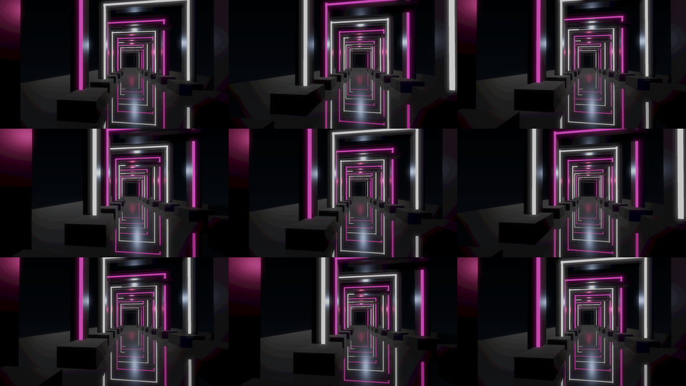

鎏光流涡
旋臂持续转动，粒子保持流动，相机绕行；音乐增强光丝、发射与流场。
音乐驱动
真正静音输入 · 自主运动
查看连续 32 秒静音采样（每 4 秒一帧）

0.3 实际 Studio 输出。每段 16 秒，左侧保留作品音乐，右侧在渲染前关闭全部音轨输入，静音也保持主运动。可同步播放比较，也可分别拖动查看。工程自评不代替你的验收。
运动硬规则：持续流动、旋转或前进，空间作品建立相机运动；音乐调制已有运动。普通循环不应回跳。手动改变速度目前仍会重映射相位；GPU 粒子保持生命周期，不保证视频首尾像素完全一致。
旋臂持续转动，粒子保持流动，相机绕行；音乐增强光丝、发射与流场。

两层瓷瓣以不同速度转动和舒展，相机绕行；音乐调制展开与釉光。

多尺度地形沿连续噪声域迁移；音乐调制起伏、侵蚀和金边。

镜头持续穿行并缓慢横移升降，门段在镜头后回收；音乐调制结构与灯光。
